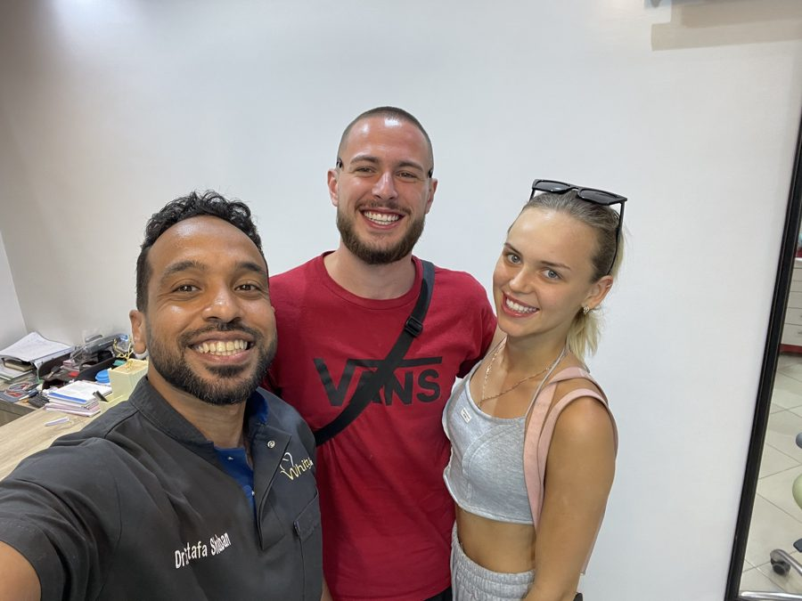
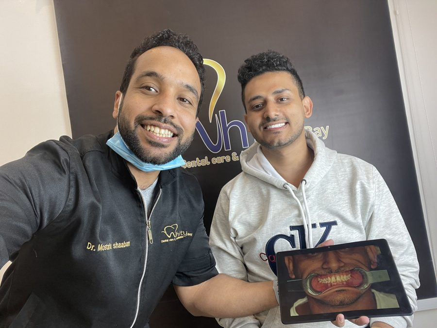
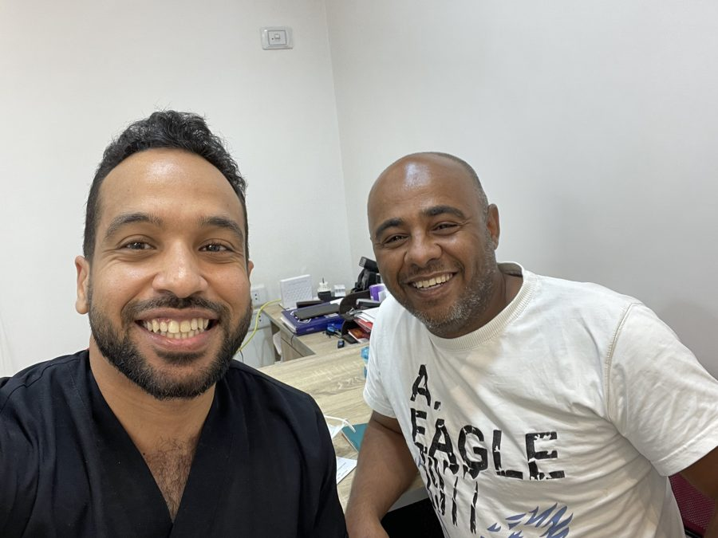
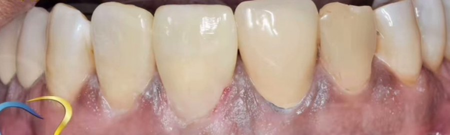

Estetická a všeobecná stomatologie · El Dahar, Hurghada
Váš zubař v Hurghadě, na dovolené i doma.
Bolest zubu na cestách, nebo nový úsměv naplánovaný podle dovolené. Napište týmu Dr. Moustafy Shaabana na WhatsApp a získejte termín bez formulářů a čekání na lince.

Ošetření
Klepněte na ošetření a zeptejte se. Dostanete osobní odpověď a cenu pro váš případ, ne obecný ceník.

Chystáte se do Hurghady? Naplánujte si ošetření před odletem.
Většinu plánování vyřídíme přes WhatsApp, aby vaše dny tady zůstaly dovolenou.
Napište nám
Řekněte nám, co potřebujete. Pomůže fotka úsměvu nebo aktuální rentgen.
Získejte plán a cenu
Dr. Moustafa vám pošle možnosti, počet návštěv a cenu.
Návštěvy podle vašeho pobytu
Termíny naplánujeme podle data vašeho příletu a odletu. Můžeme pomoci i s transferem.
Bolest zubu nebo zlomený zub na dovolené?
Napište nám, kde to bolí a ve kterém hotelu bydlíte. Dáme vám nejbližší volný termín.

Váš zubař
Dr. Moustafa Shaaban
Zakladatel WhityBay Digital Dental Center a specialista na estetickou stomatologii a ortodoncii, s 13 lety praxe a více než 4 700 ošetřenými případy.
- První certifikovaný ortodontista pro neviditelná rovnátka v Hurghadě
- Člen American Academy of Cosmetic Dentistry
- Člen MFDS · pracovník oddělení maxilofaciální chirurgie, October 6 University
- 530 kurzů a školení, mimo jiné v Digital Smile Design a moderních technologiích
Pohled do ordinace
Samostatné ordinace a klidná čekárna. Klinika se nachází v centru města, v El Daharu v ulici El Nasr.


Naši pacienti
Obyvatelé Hurghady i návštěvníci na dovolené s Dr. Moustafou v ordinaci.






Skutečné výsledky. Posuňte a porovnejte.
Fotografie z vlastních případů Dr. Moustafy ve WhityBay.

 Před
Po
Před
Po


Před PoVýsledky na videu
Krátká videa z ordinace. Klepněte a podívejte se na TikToku.


Hodnocení 5 z 5 od 207 pacientů
Každé hodnocení pochází od pacienta, který se objednal přes Vezeeta a ordinaci navštívil.
“It was my second visit to Doctor Moustafa.Last year it was first time,this year I back to the same doctor as he is and very friendly and professional, I more comfortable to visit this clinic than England. Very good service, very helpful & good advice regards my issue with teeth. … Very friendly staff at the clinic. Kind regards Justyna Dobrzynska”
“Brilliant dentist I would highly recommend,he is very understanding and explained well the procedure. His English is to a good level so are the practice staff. He also understood my extra needs due to other health issues”
“Really good service and prices”
Časté dotazy
Mluvíte anglicky?
Ano. Dr. Moustafa a tým odpovídají anglicky a arabsky, na WhatsAppu i v ordinaci.
Mohu se nechat ošetřit během jedno- až dvoutýdenní dovolené?
Často ano. Bělení, hygiena, výplně a ošetření kanálků obvykle zaberou jednu až dvě návštěvy. Fazety, korunky a implantáty potřebují více návštěv, proto nám nejdřív pošlete data pobytu a Dr. Moustafa vám řekne, co se stihne.
Jak zjistím cenu ještě před cestou?
Pošlete přes WhatsApp fotku úsměvu nebo aktuální rentgen. Dostanete plán léčby a cenu pro váš případ.
Co když mě na dovolené rozbolí zub?
Napište nám na WhatsApp, co bolí a v jakém hotelu bydlíte. Dáme vám nejbližší volný termín.
Kde je klinika?
V centru města: ulice El Nasr, El Dahar, 2. patro nad lékárnou Anbar. Můžeme pomoci i s dopravou.
Jak se objednám?
Pouze přes WhatsApp. Klepněte na kterékoli zelené tlačítko nebo vyplňte krátký formulář níže a odpovíme s termínem.
Najdete nás v El Daharu
Ulice El Nasr, El Dahar, Hurghada
2. patro, nad lékárnou Anbar
Naproti supermarketu Kheir Zaman, vedle Banque Misr
Návštěvy pouze po objednání. Taxikáři řekněte „Sharia El Nasr, Kheir Zaman“.